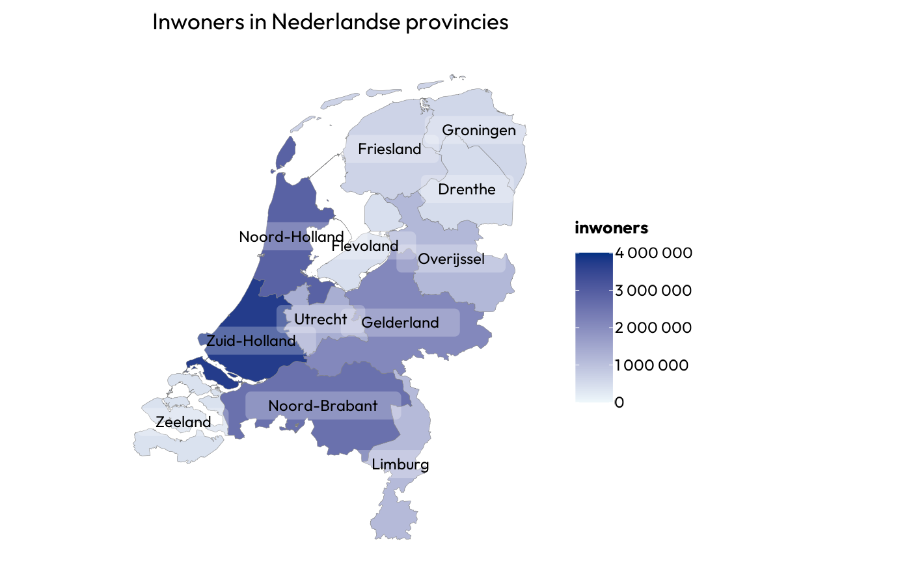
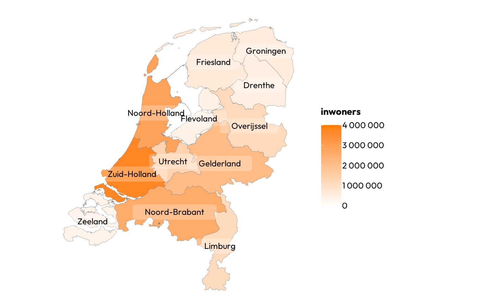
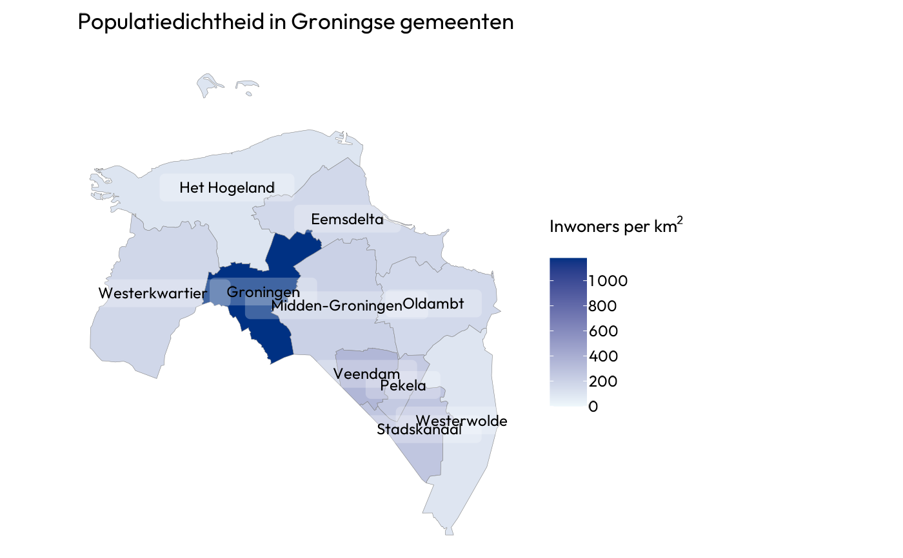

These data sets are inherited from the certegis package.
Usage
geo_gemeenten
geo_ggdregios
geo_nuts3
geo_postcodes2
geo_postcodes3
geo_postcodes4
geo_postcodes6
geo_provincies
postcodes
postcodes4_afstandenExamples
geo_provincies
#> Simple feature collection with 12 features and 3 fields
#> Geometry type: MULTIPOLYGON
#> Dimension: XY
#> Bounding box: xmin: 13565.4 ymin: 306846.2 xmax: 278026.1 ymax: 619352.4
#> Projected CRS: Amersfoort / RD New
#> First 10 features:
#> provincie inwoners oppervlakte_km2 geometry
#> 1 Drenthe 494705 2680.368 MULTIPOLYGON (((228930.1 57...
#> 2 Flevoland 428210 1466.570 MULTIPOLYGON (((164912.9 51...
#> 3 Friesland 651430 3531.269 MULTIPOLYGON (((154047.9 56...
#> 4 Gelderland 2096460 5118.931 MULTIPOLYGON (((169898.4 48...
#> 5 Groningen 586920 2392.983 MULTIPOLYGON (((276560.6 58...
#> 6 Limburg 1115835 2210.001 MULTIPOLYGON (((192680.3 41...
#> 7 Noord-Brabant 2573810 5054.037 MULTIPOLYGON (((100303.1 41...
#> 8 Noord-Holland 2887460 2864.383 MULTIPOLYGON (((150846.9 47...
#> 9 Overijssel 1166335 3408.845 MULTIPOLYGON (((182721.3 51...
#> 10 Utrecht 1360955 1553.980 MULTIPOLYGON (((130059 4794...
geo_provincies |>
plot2(title = "Inwoners in Nederlandse provincies")
#> ℹ Assuming datalabels.centroid = TRUE. Set to FALSE for a point-on-surface
#> placing of datalabels.
#> ℹ Using category = inwoners
#> ℹ Using datalabels = provincie
#> ✖ Package 'showtext' and 'showtextdb' and 'sysfonts' not installed, ignoring
#> font = "Outfit"

geo_provincies |>
plot2(colour_fill = "umcgoranje")
#> ℹ Adding white to the category scale - set two colours to colour_fill to
#> prevent this.
#> ℹ Assuming datalabels.centroid = TRUE. Set to FALSE for a point-on-surface
#> placing of datalabels.
#> ℹ Using category = inwoners
#> ℹ Using datalabels = provincie
#> ✖ Package 'showtext' and 'showtextdb' and 'sysfonts' not installed, ignoring
#> font = "Outfit"

geo_gemeenten |>
filter_geolocation(provincie == "Groningen") |>
plot2(category = inwoners / oppervlakte_km2,
category.title = "Inwoners per km^2",
title = "Populatiedichtheid in Groningse gemeenten")
#> ℹ Assuming datalabels.centroid = TRUE. Set to FALSE for a point-on-surface
#> placing of datalabels.
#> ℹ Using datalabels = gemeente
#> ✖ Package 'showtext' and 'showtextdb' and 'sysfonts' not installed, ignoring
#> font = "Outfit"

geo_gemeenten |>
filter_geolocation(provincie == "Groningen") |>
plot2(category = inwoners / oppervlakte_km2,
category.title = "Inwoners per km^2",
title = "Populatiedichtheid in Groningse gemeenten",
subtitle = "Met postcode-4 als overlay",
datalabels = FALSE,
colour = "umcgblauw",
linewidth = 1) |>
add_sf(geo_postcodes4 |> filter_geolocation(provincie == "Groningen"),
colour = "umcgoranje",
colour_fill = NA,
linewidth = 0.25)
#> ℹ In 'sf' plots, colour will set the borders, not the areas - did you mean
#> colour_fill = "umcgblauw"?
#> ✖ Package 'showtext' and 'showtextdb' and 'sysfonts' not installed, ignoring
#> font = "Outfit"